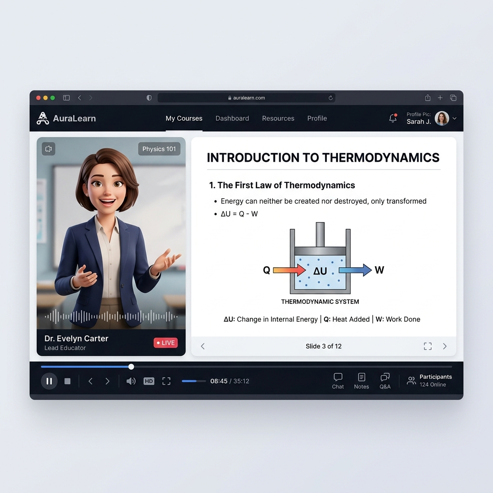
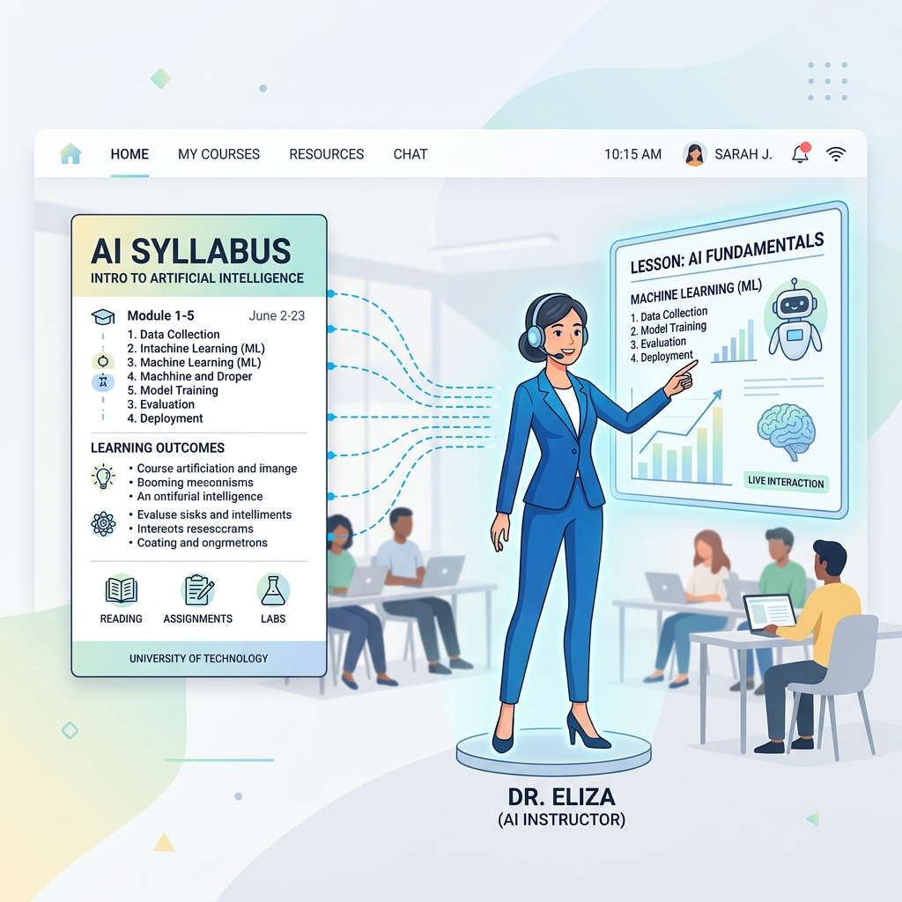

The ultimate study orchestration portal for modern universities. Empower teachers to instantly generate lecture videos with digital avatars, auto-grade quizzes, and track attendance via personalized learning dashboards.

Experience how teachers convert PDFs or slides into engaging, questions-embedded lecture videos in seconds.
Drag and drop your syllabus, book chapters, or slides below to begin generation.
PDF, PPTX, or DOCX up to 25MB
Watch AI synthesize the voice, avatar, transcript, and embedded questions.
Upload a document on the left to see the AI lecture video generation workflow in real-time.
Clicking "Generate Now" opens the active SmartStudy login screen.
A fully unified system catering to administrators, educators, and students.
Complete administrative power to manage academic offerings, user profiles, and operational parameters.
Transform teaching methods by delegating heavy curation and content creation tasks to advanced AI models.
An interactive, personalized workspace optimized for maximum knowledge absorption and mastery.
Designed from the ground up to solve student retention, instructor burnout, and administrative overhead.
Natural text-to-speech engine coupled with facial lip-sync animation makes virtual instructors feel lifelike.
Keeps students engaged by prompting questions at key timestamps, checking comprehension in real-time.
Visual gauges track how much support a student needs (e.g. hint reliance) to adjust study guides dynamically.

Everything you need to know about the SmartStudy architecture.
Instructors upload syllabus materials (PDF/DOCX/PPTX). SmartStudy's AI agent parses the document hierarchy, generates a comprehensive video script based on the academic concepts, structures slides, and generates an MP4 lecture video featuring a customizable digital instructor avatar speaking the script.
Students must watch lectures inside their portal. System background services track lecture progression. Full completion of a lecture dynamically marks the student's attendance for that session. Pop-up quizzes and final assignments evaluate their score metrics and shape their overall topic-wise mastery profile.
The system is built with a backend written in FastAPI (Python) using SQLAlchemy for robust database relational mapping. The administrator console is built using React (Vite/TypeScript), and the mobile/desktop student client application is built using Flutter.
Yes. The administrator sets a registration deadline date/time. Offered courses go live for students to self-enroll. Once the countdown timer hits absolute zero, the system automatically shuts down student self-enrollments, processes pending requests, and finalizes class rosters.